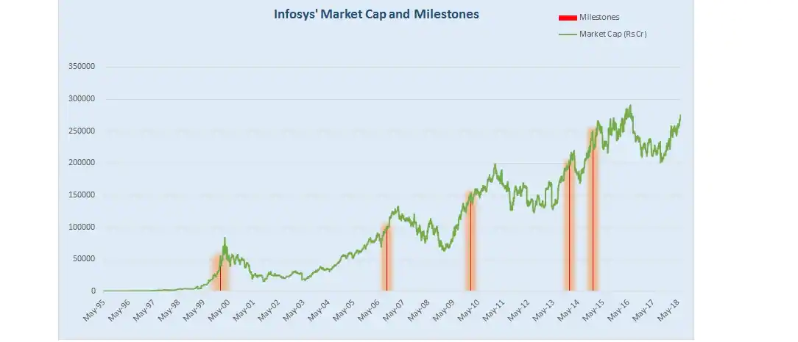
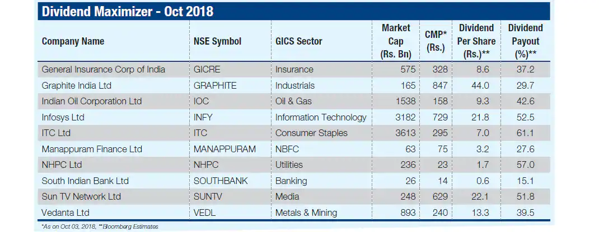
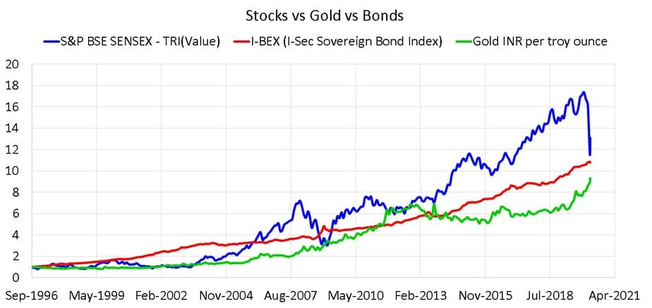

Why should you invest in equities.
by Sheldon Mendonca | Novice Author |
With the success of 'Scam 1992', it seems everyone wants to jump in on the action of stock market. While this blog may not help you in becoming the next Harshad Mehta, we can tell you why you should start investing in stocks.
There are many ways of saving your money and generating money. Few of these are:
- 1. Savings / FD
- 2. Real-Estate
- 3. Gold / Silver / Metals
- 4. Equities (also known as stocks)
Of these, Savings / FD seem to be the safest instrument of storing your money and may generate some return. However, the returns are low and generally do not beat inflation. This means that you are losing money every year without doing anything. However, this instrument is goof for emergency situations where you need a huge sum of money in a short period of time.
Real Estate requires a lot of starting capital and may not be scalable for an individual investor.
Precious metals have generated steady rate of return these previous years. These have generated rate of returns that slightly outpace inflation. But can you do better?
Introducing equities. Equities or stocks refer to a portion of the ownership of a company. If the value of a company increases, its stock price increases accordingly. Below, we shall be providing you five reasons, why you consider investing in equities as an option:
-
1. Stocks of good companies go up.
As an ordinary guy, think about the food you eat, the house you live in, the vehicle you drive, the phone you use. Chances are that most of the items (either ready made or its raw materials) are manufactured by a listed company. If you like the vehicle you drive or the salt you use to season your food and believe that the companies that manufactures these are bound to grow for the next 10 years, then you can invest in them and reap the rewards. However, there is a potential downside that the company may lose its profits or market share which may negatively affect the stock price.
 -
2. Easy barrier of entry.
All you need to start investing is a PAN card and a demat account. Not only that but the cost of stocks can range from one rupee to one lakh. You may think how can you buy a stock of a huge company like 'Hindustan Unilever Limited'? The answwer is that most companies conduct stock splits frequently reducing the price proportinately. Also there are undervalued companies who may not be significantly valued by the market, but you can capitalize on the opportunity.

-
3. Dividends.
When a company makes profits, the promoters may decide to distribute some amount of money as dividend. If the companies profit increases, the company may decide to increase the amount of dividends. These small dividends add up to a huge amount, and if reinvested, results in wealth compounding. One such example is shown below.
 -
4. Outpacing inflation.
Remember inflation? The bad guy who ensures that even though you are getting money, you are losing money? Well, as the Indian economy continues to grow, the revenues of many companies increase at a faster pace. Furthermore, the government is planning to shape its policies to help startups and companies for the next 20 years so you are also investing directly in the future of India. A good number of these companies also operate in foreign markets so the revenue streams are diversified, thus causing less risk.
 -
5. Exits.
If you disagree with some of the policies of the company or the results published by them, you can exit a stock too. Every company provides quarterly and annual financial reports so by looking at them, you can decide whether to remain invested in that company or not. Stocks of many companies are liquid, meaning that there are possibly thousands of buyers if you wish to sell.
So now that you have some idea on why to invest in stocks, does that mean you should jump in directly?
I suggest you don't. Read thoroughly about investing and the parameters that determine a company's value on sites like investopedia.com or moneycontrol.com. Always rememeber to choose wisely and believe in the power of compounding.